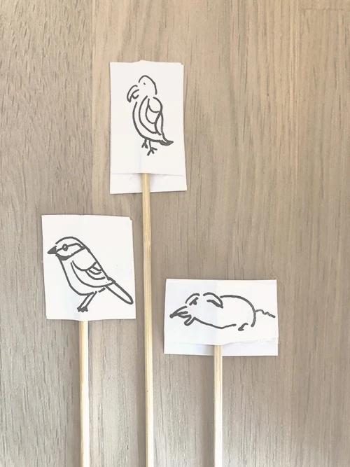

PORTFOLIO
MMD 1. SEMESTER F2021
VELKOMMEN
Dette er min portfolio opgave som også var tema 6 i første semester.

06 - PORTFOLIO
Denne opgave gik ud på at lave en portfolio over hele semestret. Det færdige produkt er dette website som du besøger lige nu. Vi skulle benytte os af de grundlæggende færdigheder vi har lært i HTML, CSS, JavaScript samt produktion af indhold og designteori.
